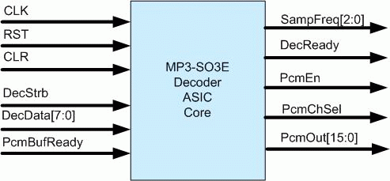

|
 |
| |
Media Silicon Ultra Low Power MP3 Decoder
ASIC Core (MP3-SO3E)
Important features
-
Decode all MP3 bit streams under 9 MHz Clock,
-
45 K gates in logic plus 13K bytes on chip data memory, no program ROM needed,
-
Ten-band equalizer with 64 steps for -20 to 20 dB gain,
-
Thirty-two steps volume control,
-
Superior
music quality,
-
Straightforward
user interface,
-
Hand-crafted
optimized data path with complete hard-wired logic,
-
Fully
synthesizable technology independent of verilog RTL code

Why MP3-SO3E is the best choice for MP3 decoding chip?
|
Technology |
MP3-SO3E |
ARM7 |
|
Clock rate required |
9 MHz |
25 Mhz |
|
Logic gate* |
45K |
75K |
|
Program ROM * |
None |
30K bytes |
|
Data RAM* |
13K bytes |
30K bytes |
|
Total gate count: |
45+13*8=104 K gates |
75+30*8+8=323 K gates |
|
Volume control |
Yes |
Yes |
|
10 band equalization |
Yes |
No |
|
Integration time |
3-4 weeks by one experienced ASIC engineer |
10-15 weeks for a couple of experts in the field
of RISC/DSP processor integration. |
|
Software Issue |
None |
10-15 weeks to develop the API |
|
Cost
|
Relative low |
Unaffordable for small/mid size company |
*Assuming,
4 ROM cell = 1 gate count, 1 RAM cell = 1 gate count, ARM7 core logic =45k gates, the interface logic for ARM7 30~50k
gates.
In general,
DSP cores consume similar silicon area as ARM7 does.
Please email qian@mediasilicon.com for more information
|
|
|